蜂場
いくつもの蜂場を、タイル・一覧・地図の3つの見方で確かめられます。

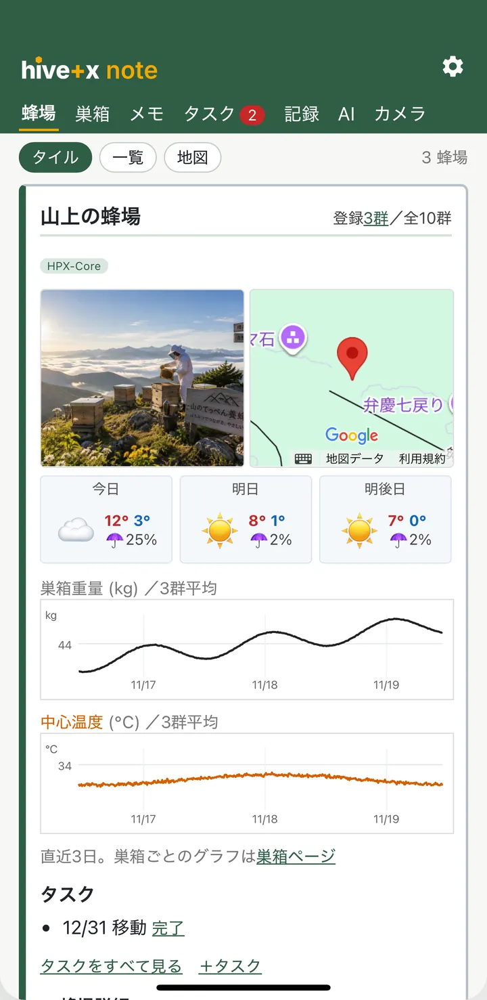

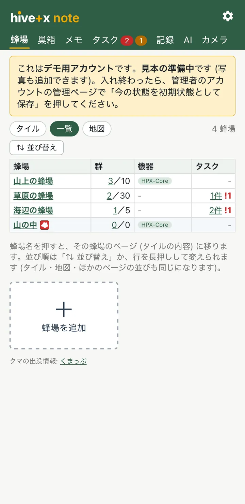

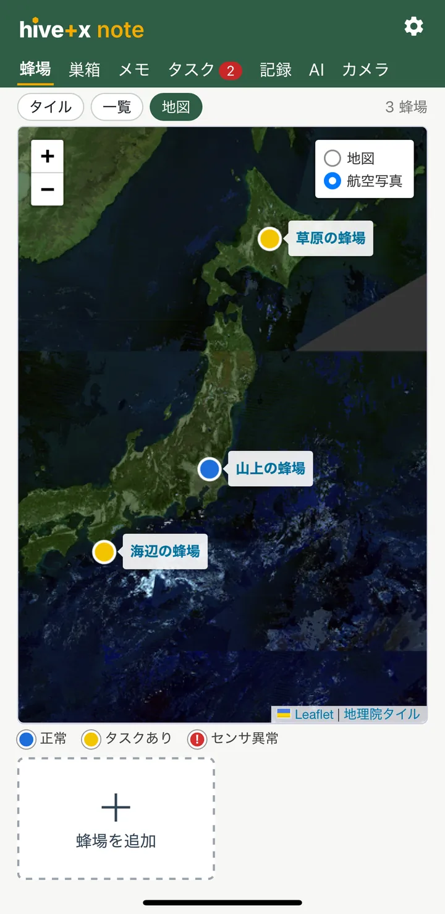
← 横にずらすと次の画面 →
- 天気予報のイラストを押すと、雨雲レーダーのページが開きます。好きな天気予報のページに変更可能です。
- 蜂場近くの熊出没状況を表示します。(クマの出没情報: くまっぷ) 黄: 過去3年・10km以内に出没赤: 過去1年・5km以内に出没 (新しい情報は点滅)
- ＋から新しい蜂場を登録。位置はマップからも選べます
巣箱
巣箱ごとに、重さと温度・湿度の変化をグラフで表示します。

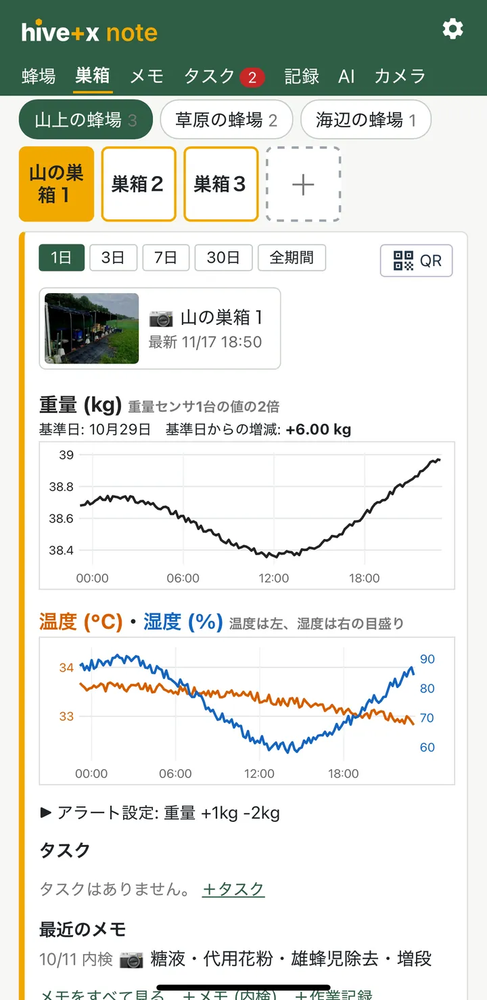
- HPX-CAMをつければ、最新の写真が表示されます。
- 重量と温湿度は1日〜全期間で表示を切り替え。
- 重量は基準日を設定すれば、基準日からの増減も表示されるので、採蜜時からの変化などが分かりやすいです。
- 基準日からの重量変化と温度変化が、決めた値を超えたらお知らせするアラート機能を搭載。
- 最近のタスクやメモもこのページに表示されます。
- 巣箱の QR コードを出力できるので、巣箱に貼ると、スマホで読んですぐ内検メモのページを開けます
メモ
内検の結果やミツバチの様子、外敵、開花植物など「ミツバチとそのまわり」のことをメモするページです。

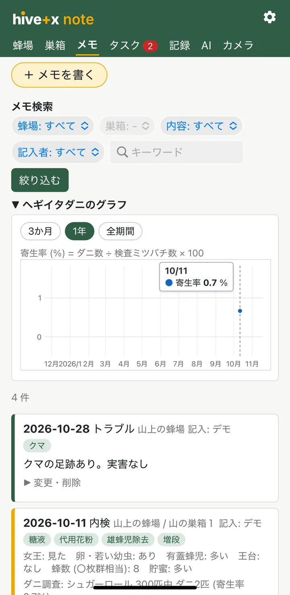

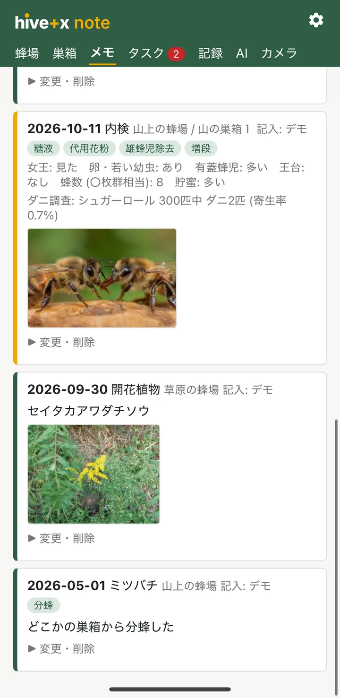

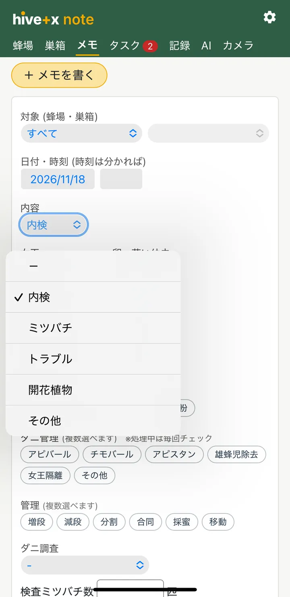

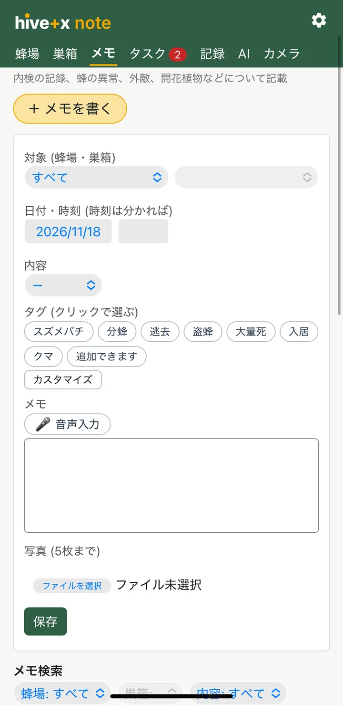
← 横にずらすと次の画面 →
- ダニ調査は、調べた蜂の数とダニの数を入れると寄生率を自動で計算
タスク
これからの作業予定を入力しておけば、お知らせが届き、Googleカレンダーとも同期できます。
チームでの作業分担にも活用できます。

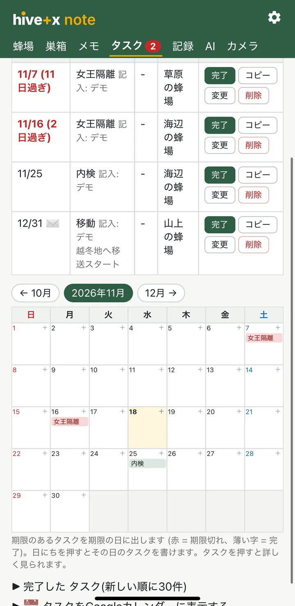
- タスク一覧で概要を確認でき、完了チェックや、タスクのコピーができます。
- カレンダーの日にちを押すと、入力画面が開きます。
- 担当は複数人でも、対象は蜂場でも巣箱でも登録できます
- 期限が近いとメールやLINEでお知らせ。スマートフォンでアプリ化するとアプリ通知も届きます。
記録
作業にかかった時間や採蜜量など「人がしたこと」を記録します。

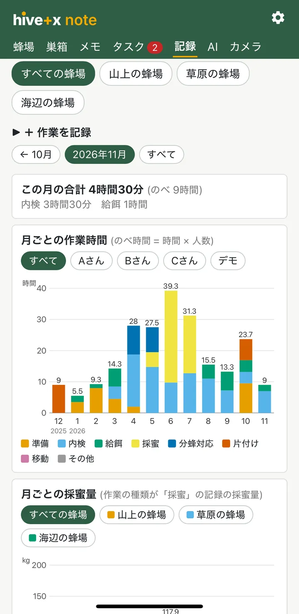

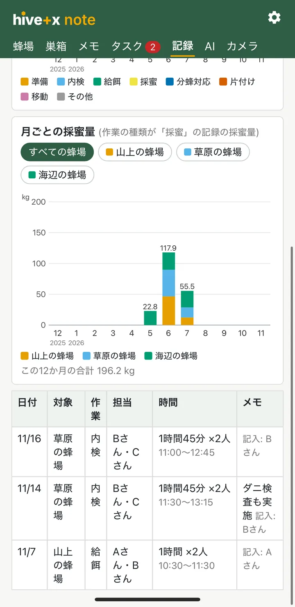

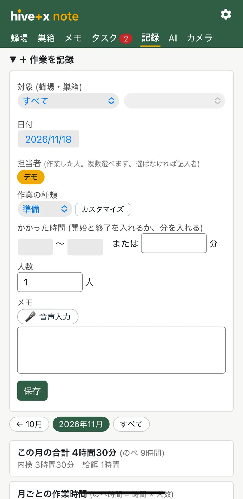
← 横にずらすと次の画面 →
- 担当者ごとの記録ができるので、チーム管理に役立てられます。
AI
AI がメモ・作業記録・タスクへの入力をサポートします。

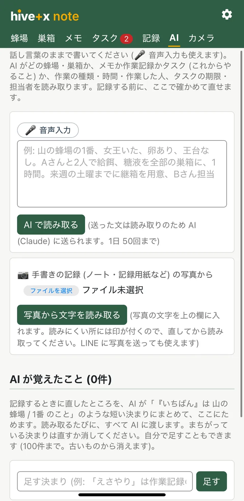
- 話し言葉で書けば、AI がメモ・作業記録・タスクに入力します。
- マイクを使えばしゃべるだけ。
- 紙の記録も写真で送れば読み取ってくれます。手書きの記録用紙やノートの写真から文字を読み取ります
- 入力結果を修正すれば、修正履歴を記憶して、あなたに寄り添ったAIに育ちます。
- 入力内容をLINEから送っても記録できます。
カメラ
カメラ HPX-CAM で、蜂場や巣門の写真を定期的に撮影して記録します。
強風後の蜂場の確認や、分蜂やスズメバチ襲来の確認に役立ちます。

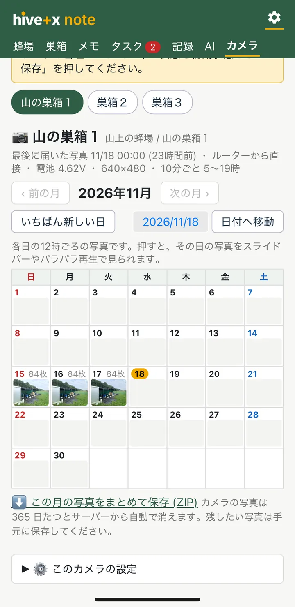

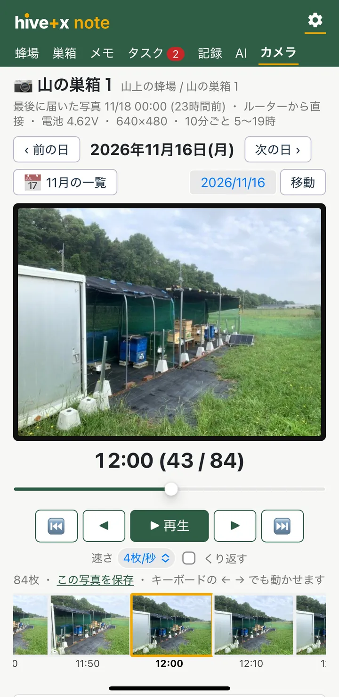
← 横にずらすと次の画面 →
- 画像に大きな変化があったときは、AIによって判断してお知らせする設定も可能です。
設定
右上の歯車アイコンから、センサ・カメラ・チーム・マイアカウントなどの設定を開きます。

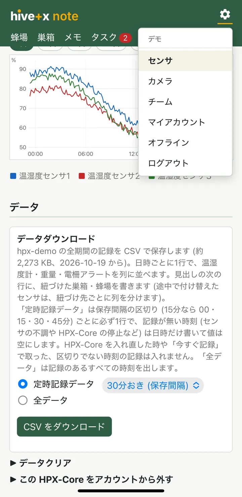
- センサ設定では、温湿度の校正、重量センサの風袋引き、データのダウンロードなどができます。
- カメラ設定では、設置カメラ一覧が表示されるので、カメラを簡単に切り替えて画像を確認できます。
- チーム設定では、チームメンバーの管理や、蜂場の共有設定などができます。
- マイアカウント設定では、お知らせの方法を決めたり、データの一括ダウンロード、設定とデータのバックアップと復元などができます。
- オフライン機能画面は、電波のない場所で入力するための方法の確認と、管理ができます。
- ※サーバー管理者には、ユーザー管理メニューも表示されます。アカウント管理やデータ管理ができます。
Guide
使い方ガイド
HPX-note の画面ごとの使い方です。見たい項目を押すと開きます。
はじめて使うときの流れ
- 管理者から届いた案内でログインする (ログインID はメールアドレス)。
- 蜂場 で「＋ 蜂場を追加」から蜂場を登録する。
- 巣箱 で、その蜂場に巣箱を登録する。
- HPX-Core を使うときは、マイアカウント の「HPX-Core の接続 (機器用トークン)」にある 送信先の URL と トークン を、HPX-Core の管理画面の「動作設定」欄に入れる。HPX-Core からサーバーに記録が届くと、センサ の画面に HPX-Core が表示される。
- 蜂場の情報の変更で「この蜂場の HPX-Core」を選び、巣箱の情報の変更で「この巣箱のセンサ」(温湿度・重量) を選ぶ。選べるのは、その蜂場の HPX-Core に登録したセンサだけ。
- あとはメモ・タスク・記録を書いていく。
上部メニュー
蜂場
- 蜂場ごとのタイルに、巣箱の数、機器 (HPX-Core・電柵アラート) の状態、写真と地図、3日間の天気、巣箱の重さと中心温度の直近3日のグラフ、タスクが並びます。
- 上の「タイル / 一覧 / 地図」で見せ方を変えられます。地図 には緯度・経度を入れるか、マップで地点を選んだ蜂場だけが点で出ます (青 = 正常、黄 = タスクあり、赤 = センサの異常)。
- 住所だけの入力ではマップに表示されません。
- 一覧の「⇅ 並び替え」で、蜂場の順番をドラッグで変えられます。
- 蜂場名を押すと、その蜂場だけのページになります。
- 蜂場の情報を変更 で入れられるもの: 蜂場の名前 (必須)、所在地住所、緯度・経度 (「🗺 地図で選ぶ」で地図を押すと入る)、地主・連絡先、巣箱数、写真、天気予報のページ (好きな天気予報サービスの URL)、この蜂場の HPX-Core・電柵アラートセンサ・温湿度センサ (蜂場の気温・湿度として出す)、説明・備考、共有するチーム
- 天気のイラストを押すと、雨雲レーダーのページが開きます。お好みの天気予報ウェブサイトを設定することもできます。
巣箱
- 上で蜂場を選び、四角い巣箱のボタンで巣箱を選びます。＋ で巣箱を追加。
- 期間 (1日・3日・7日・30日・全期間) を選ぶと、重さと温度・湿度のグラフが出ます。グラフを押す (なぞる) と、その時刻の値が出ます。
- 基準日 (採蜜した日など) を入れると、その日からの重さの増減も出ます。
- 巣箱に重量センサが1台なら、巣箱の重さはセンサの値の2倍で計算します (片側だけ量るため)。2台の重量センサを1つの巣箱に登録すれば、2つの重量センサの値を合計した正確な値が出ます。
- 蜂場画面で蜂場の計測用の温湿度センサを選んでいると、蜂場の気温・湿度も同じグラフに出ます。
- アラート設定: 「アラート設定」を押して開き、重さや温度の上限・下限を入れると、15分ごとの見回りで超えたときにメールやLINEでお知らせします。空欄の項目は知らせません。「同じ蜂場の他の巣箱も同じ設定にする」に印を付けて保存すると、同じ蜂場の巣箱すべてが同じ設定になります。アラート設定を変えられるのは、蜂場の持ち主とチーム管理者だけです。
- その巣箱のタスク・最近のメモ・群の詳細 (状態・群を入れた日・女王・巣箱の種類など) も出ます。
- 巣箱に貼る QR コード: ラベルを印刷して巣箱に貼ると、スマホのカメラで読むだけで、その巣箱の内検メモを書く画面が開きます。
メモ
- 「＋ メモを書く」で入力欄が開きます。
- 対象: 蜂場と巣箱を選ぶ。蜂場を「すべて」にすると、どの蜂場にも出るメモになります。
- 内容: 内検・ミツバチ・トラブル・開花植物・その他。
- 内検の項目: 女王・卵・蜂児・王台・蜂数・貯蜜などを選ぶだけ。行った処置 (給餌・ダニ管理など) は複数選べます。
- ダニ調査: 調査方法、検査したミツバチの数、見つけたダニの数を入れると、寄生率 (%) を計算します。メモの画面の下に、巣箱ごとの寄生率のグラフが出ます。
- 作業記録にも追加: 内検にかかった時間を入れると、作業の記録 (種類「内検」) にも入ります。
- 開花植物: 植物・咲き具合・ミツバチの訪花を選べます。一覧に無い植物は名前を書いて足せます。
- タグ: 分蜂・スズメバチ・クマなど。押すだけで付けられ、「カスタマイズ」で増やせます。
- 写真: 1つのメモに5枚まで。
- 🎤: 音声入力 (話した言葉を文字にする。ブラウザの機能を使います)
- メモ検索で、蜂場・巣箱・内容・記入者・ことばで、過去のメモを探せます。
タスク
- これからやる作業を予定にします。やること か タグ のどちらかを入れ、期限・担当者 (複数可)・対象 (蜂場・巣箱)・メモを入れます。
- 期限が近いと色が付き「あと何日」と出ます。お知らせをオンにすると、期限の日の朝にメールやLINEで担当者全員へお知らせします。
- 各タスクの 完了・コピー・変更・削除。コピーで、ほかの蜂場にも同じタスクを作れます。
- 下の月のカレンダーで、日にちを押すとその日が期限のタスクを入力でき、タスクを押すと詳しい内容が表示されます。
- 📅 タスクを Google カレンダーに表示する: 出てくる URL を Google カレンダーの「URL で追加」に貼ると、期限のある未完了のタスクが自分の Google カレンダーに出ます (HPX-note から Google カレンダーへの一方向)
記録
- 作業項目 (準備・内検・給餌・採蜜など)、日付、かかった時間 (開始と終了、または分)、作業した人 (複数可)、人数、メモを記録します。
- 作業項目が「採蜜」のときは、採蜜量 (kg) も入れられます。月ごとの採蜜量のグラフが出ます。
- この月の合計時間と内訳、人ごとの作業時間、12か月の作業時間のグラフが出ます。のべ時間 = 時間 × 人数。
- 作業項目は「カスタマイズ」で足す・外す・並べ替えができます。
AI
- 「山の蜂場の1番を内検、王台2つ、30分」のように話し言葉で書く (🎤 も使える) と、AI がどの蜂場・巣箱か、メモか作業記録かタスクかを読み取ります。確かめて直してから「記録する」を押します。
- 「📷 手書きの記録の写真から」で、ノートや記録用紙の写真を読み取ることもできます。
- 直したところを AI が覚えて、次回からそれを学習してから読み取りに使います (「AI が覚えたこと」で見る・直す・消す)。
- LINE と連携していれば、LINE のトークに送っても記録できます。
- 1日に使える回数には上限があります。
各種設定 (歯車アイコン)
センサ
- 自分のアカウントにつないだ HPX-Core ごとに、最後に届いた時刻、ファームウェアの版、電池の電圧、Wi-Fi の電波などを出します (5分ごとに自動で更新)。
- 温湿度計・重量センサ・電柵アラート (HPX-F)・バッテリー (HPX-B) の記録と、グラフを出します。
- 温度・湿度の補正: 温湿度計ごとに、温度・湿度の補正表示が可能です (補正は表示のみに反映され、元のデータは補正されません)
- 重量: 重さの較正は HPX-Core の管理画面で行います。HPX-note のセンサ画面では「風袋引き」(現在の状態をゼロ点にする設定) ができます。
- データ (CSV): 記録を Excel で開ける CSV でダウンロードできます。「定時記録データ」は保存間隔 (15分など) ごとに1行、「全データ」は届いた記録すべてです。
- HPX-Core をアカウントから外す・元に戻す、記録を消す (データクリア) ができます。
チーム
- 同じ蜂場を何人かで管理するときに使います。
- 「＋ チームを作る」で作った人がチーム管理者になります。メンバーは、アカウントのある人をメールアドレスで追加します (アカウントの無い人は、サーバー管理者に作ってもらう)。
- 「＋ 蜂場を共有」で、自分の蜂場をチームメンバーに共有します。共有した蜂場のメモ・タスク・記録は、メンバーも見たり書いたりできます (役割による)。
- チーム設定を解除しても、蜂場・メモ・記録は消えません。
マイアカウント
- 表示名、パスワードの変更、メールアドレス (ログインID) の変更。
- 通知メールの送り先: 空なら、ログインのメールアドレスへ送ります。
- お知らせメールのオン/オフ: 種類ごとに止められます。全部止めると、電柵の電圧低下にも気づけないので注意してください。
- LINE でお知らせを受け取る: 連携コードを発行して、Hive Plus X の LINE公式アカウントのトークに送ると連携します (サーバーで LINE の設定がされているときだけ)。
- HPX-Core の接続 (機器用トークン): HPX-Core の管理画面にデータの送信先を設定するための URL とトークン。トークンは人に見せないでください。作り直すと、つないでいるすべての HPX-Core に入力しなおす必要があります。
- データ一括ダウンロード: 蜂場・巣箱・メモ・タスク・記録・センサの記録を CSV の ZIP で保存。
- バックアップと復元: 自分の蜂場・メモなどを1つのファイルに保存し、あとで復元できます。
- データの利用について: データを、研究や AI の学習に使うことへの同意確認です。
カメラ (HPX-CAM を使っているときだけ)
- 蜂場に置いた HPX-CAM の写真を見られます。各日の12時ごろの写真が並び、押すとその日の写真をスライドやパラパラ再生で見られます
- カメラの設定で、置いている蜂場・撮っている巣箱・撮影の間隔・時間帯を決めます
- 写真が大きく変わったとき (巣箱が倒れた、人が来たなど) にお知らせを送ることもできます
- 写真は一定の日数で消えるので、残したい写真は手元に保存してください
オフライン
- ホーム画面に追加すると、アプリのように使えます。
- 一度開いたページは端末に保存され、電波が無くても見られます。
- 電波が無いときも、メモ・作業記録・タスクを書く・変える・完了にすることができます。書いたものは「送信待ち」になり、電波のある所で HPX-note を開くと自動で送ります。
- iPhone は、HPX-note を閉じている間には送れません。電波のある所でもう一度開いてください。
- ログアウトすると、端末に保存したページと送信待ちのデータが消えるので、ご注意ください。
お知らせ・アラート (メール・LINE・プッシュ通知)
- 電柵の電圧低下、巣箱の重さ・温度が設定を超えたとき、センサや HPX-Core の電池の残りが少ないとき、記録が届かない、タスクの期限、カメラの大きな変化 など。
- お知らせが届かないときは、マイアカウントの「通知メールの送り先」と「お知らせメールのオン/オフ」、迷惑メールのフォルダを確かめてください
デモ用アカウント
- 見本のデータが入ったアカウントで、画面を自由に試せます。設定・チームの変更、メールの送信などはできません。毎日決まった時刻に元に戻ります。
分からないことは AI ヘルプ でも聞けます。